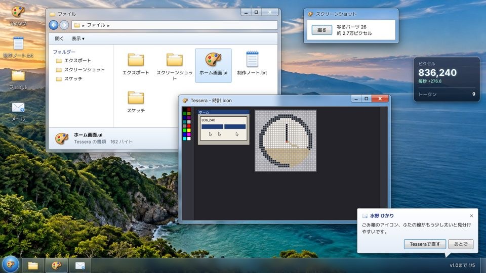
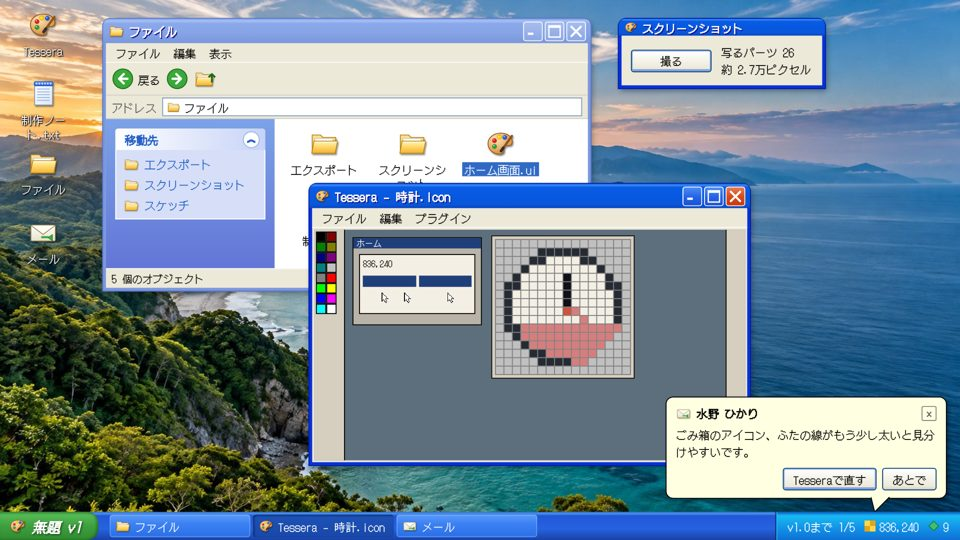
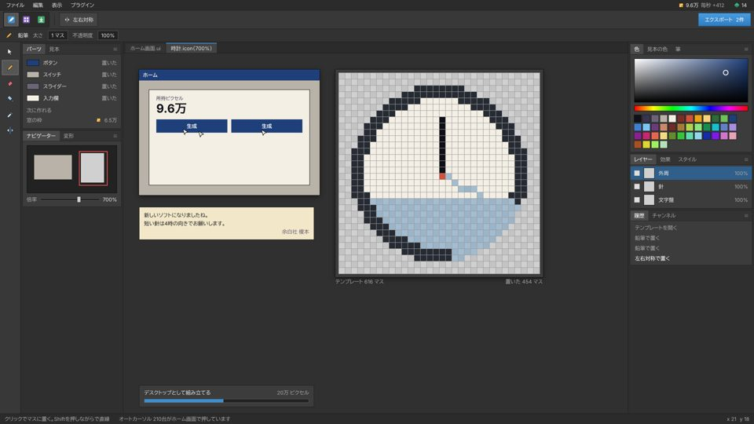
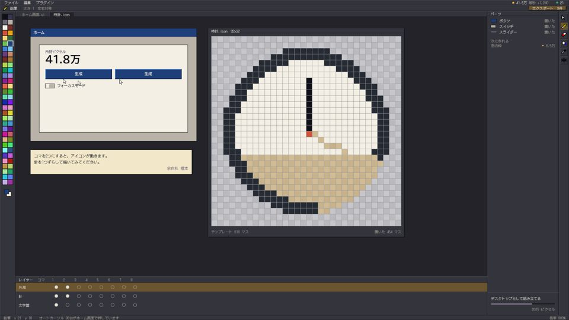
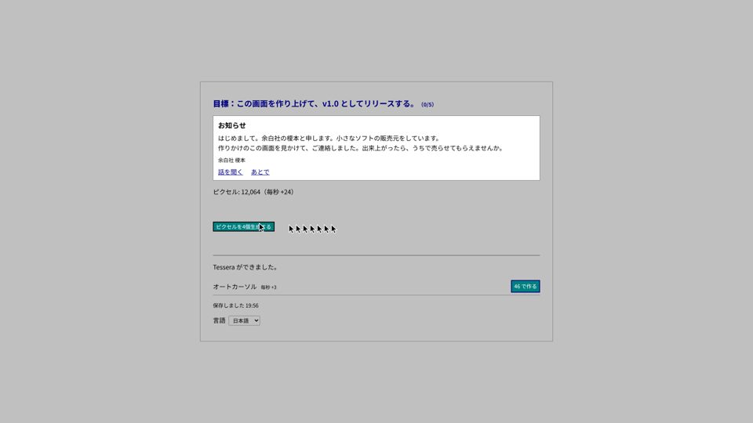

ハコストアライブラリコミュニティ
閲覧 ⌄おすすめ ⌄カテゴリー ⌄
すべてのソフトウェア > ユーティリティ > あおぞら
あおぞら 2 - 自分で育てるデスクトップコミュニティハブ






あおぞら 2
ボタン1つから始まる画面を、ペイントソフトとデスクトップごと育てていく。描いたアイコン、並べた窓、撮った画面が、そのまま自分の製品になる。
すべてのレビュー：非常に好評 (1,284)リリース日：2026年11月1日開発元：ゆうパブリッシャー：余白社
ユーザーが定義したこの製品への人気タグ：
ユーティリティデザインカジュアル+
ウィッシュリストに追加フォローする
あおぞら 2 を購入する$12.99カートに入れる
レビュー
「ごみ箱のアイコンをお願いしたら、すぐ直してくれました。小さく表示しても見分けられます。」
5.0/5 – 水野 ひかり
「最初はボタンしかなかったのに、使うたびに画面が育っていきます。色を変えられるのも楽しいです。」
4.0/5 – 高瀬 蓮
このソフトウェアに興味がありますか？
前の版「あおぞら for デスクトップ 1.0」を使ったことがある人は、絵や撮った画面をそのまま引き継げます。